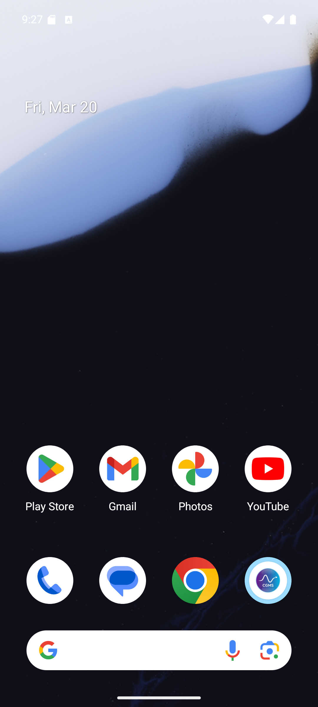

MainDashboardPage.build(), MainDashboardPage._recompute()
TrendTabPage.build(), TrendTabPage._reloadTir()
CgmsReportScreen.build(), CgmsReportScreen._load()SensorPage.build(), SensorPage._mockScan(), SensorPage._connect()
AlertsRootPage.build(), AlarmTypeDetailPage._save()
SettingsPage.build(), SettingsPage._save()